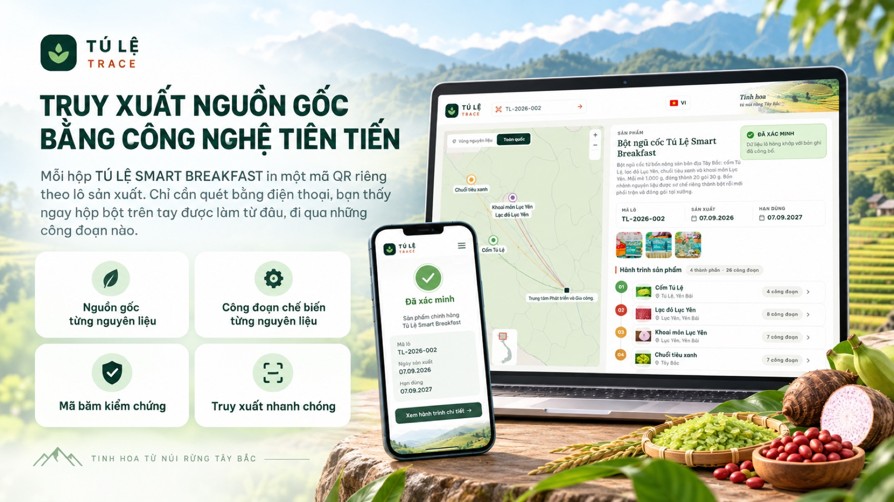
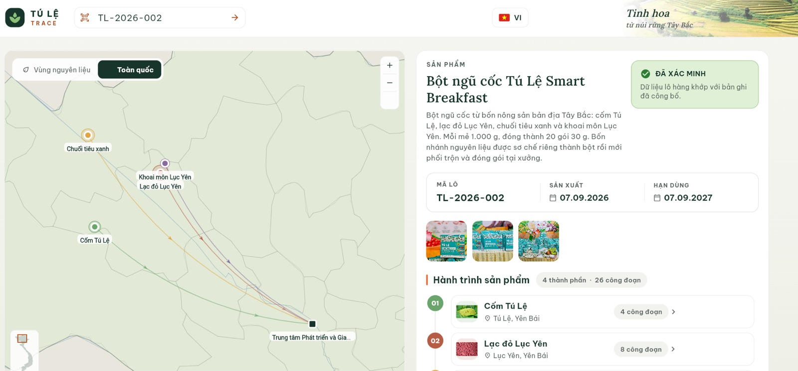
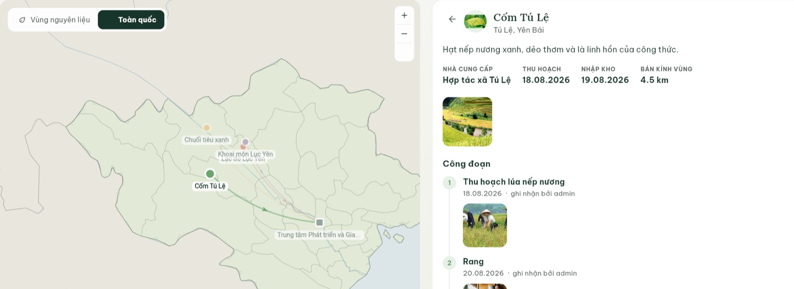

Trang chủ / Công nghệ truy xuất
Truy xuất nguồn gốc bằng công nghệ tiên tiến

Mở công khai, không cần đăng nhập và không cần cài ứng dụng. Đây cũng là địa chỉ nằm sau mã QR in trên bao bì.
Dành cho người mua
Truy xuất nguồn gốc nhanh chóng bằng ba bước
Hệ thống mở công khai. Bạn không cần cài ứng dụng, không cần tạo tài khoản, không cần ví điện tử hay bất cứ kiến thức về blockchain nào.
-
Bước 1
Quét mã QR trên bao bì
Camera điện thoại mở thẳng hồ sơ lô. Nếu không quét được, nhập mã in ngay dưới mã QR, hoặc bấm nút quét camera trong trang.
-
Bước 2
Xem hành trình của lô
Bốn vùng nguyên liệu hiện trên bản đồ. Từng công đoạn có ảnh thực tế, tên nhà cung cấp và ngày thu hoạch.
-
Bước 3
Đối chiếu bằng chứng
Dải cuối trang hiện phiên bản hồ sơ, thời điểm công bố, mã giao dịch, và một nút mở giao dịch đó trên trình khám phá blockchain để bạn tự xem.


Tính năng
Hệ thống có gì
Vùng trồng khoanh trực tiếp
Mỗi lô nguyên liệu có vùng trồng được khoanh trên bản đồ, không chỉ ghi tên xã.
Từng công đoạn kèm ảnh thật
Toàn bộ công đoạn theo đúng sơ đồ quy trình bốn nhánh, mỗi công đoạn có ảnh riêng.
Neo bằng chứng lên blockchain
Mỗi lần công bố sinh một mã băm SHA-256, ghi thành giao dịch trên blockchain công khai để có mốc thời gian độc lập.
Xem lại phiên bản cũ
Công bố lần sau không ghi đè lần trước. Mỗi bản được giữ nguyên trạng, xem lại được đúng như lúc chốt.
Hệ thống chạy trên môi trường thật, không phải bản mô phỏng. Tài liệu kỹ thuật đầy đủ gồm kiến trúc, mô hình dữ liệu, cơ chế toàn vẹn, đối chiếu tiêu chuẩn và kết quả kiểm thử nằm trong bộ slide riêng của dự án.
Tính mới
Khác gì so với một tem QR thông thường
Phần lớn tem truy xuất hiện nay chỉ dẫn tới một trang giới thiệu thương hiệu, và dữ liệu nằm trên máy chủ của chính người bán. Sửa nội dung sau khi in bao bì không để lại dấu vết nào cho người mua kiểm tra.
Công bố lần sau không ghi đè lần trước
Mỗi lần công bố sinh một phiên bản mới. Toàn bộ nội dung cũ và giao dịch tương ứng vẫn tra cứu lại được, đúng như lúc chốt, nên không thể âm thầm sửa hồ sơ của một lô đã ra thị trường.
Thời điểm không do hệ thống tự khai
Mã băm và thời điểm nằm trong một khối đã được mạng blockchain xác nhận. Người bán không đặt được ngày, cũng không lùi được ngày về sau.
Ai cũng kiểm chứng lại được
Bất kỳ ai cũng đọc được sự kiện trực tiếp từ blockchain và tự băm lại nội dung đang hiển thị để so sánh hai mã băm. Không phải tin lời người bán, cũng không phải tin lời hệ thống.
Đặt cạnh nhau cho dễ thấy
| Câu hỏi của người mua | Tem QR thông thường | Hệ thống truy xuất Tú Lệ |
|---|---|---|
| Mã dẫn tới đâu? | Trang giới thiệu chung của thương hiệu | Hồ sơ của đúng lô hàng đang trong tay bạn |
| Dữ liệu ai giữ? | Máy chủ của người bán, sửa lúc nào cũng được | Hồ sơ trên hệ thống, nhưng dấu vân tay nằm trên blockchain công khai |
| Biết hồ sơ có bị sửa không? | Không có cách nào biết | Băm lại nội dung, so với mã băm đã neo |
| Ngày công bố có đáng tin? | Do hệ thống tự ghi | Nằm trong khối đã xác nhận của mạng |
| Xem lại được bản cũ? | Không, bản mới ghi đè bản cũ | Mọi phiên bản được giữ nguyên trạng |
| Cần cài gì để kiểm tra? | Thường phải tải ứng dụng riêng | Chỉ camera điện thoại, không tài khoản, không ví |
Bên trong hệ thống hoạt động thế nào
Ba sơ đồ, đi từ dễ tới khó. Sơ đồ nghiệp vụ nói ai làm gì và dữ liệu đi đâu. Sơ đồ blockchain nói vì sao hồ sơ không sửa được. Sơ đồ kiến trúc nói hệ thống được lắp bằng những gì.
Sơ đồ 1 trong 3 · Nghiệp vụ
Ai đẩy dữ liệu lên, và dữ liệu đi đâu
Truy xuất nguồn gốc không phải một phần mềm, mà là một cách làm việc. Sơ đồ này cho thấy toàn bộ cách làm đó trên một hình.
Đọc sơ đồ theo bốn tầng
Ba nhóm người
Hợp tác xã lo vùng trồng. Đơn vị sản xuất thu hoạch, sơ chế, đóng gói và gắn mã. Người tiêu dùng ở cuối, chỉ tra cứu và kiểm chứng.
Sáu việc thực tế
Đăng ký vùng trồng, ghi nhật ký canh tác, thu hoạch và kiểm nghiệm, đóng gói và gắn mã, vận chuyển và phân phối, cuối cùng là quét mã tra cứu.
Nơi giữ nội dung
Mọi việc trên đều báo về một chỗ. Chỗ đó kiểm tra dữ liệu có hợp lệ không, sắp lại cho đúng khuôn, giữ toàn bộ nội dung, rồi tính ra một dấu vân tay cho từng việc.
Nơi giữ bằng chứng
Chỉ dấu vân tay, mốc thời gian và mã của người thực hiện được ghi lên blockchain. Nội dung không lên đó. Đã ghi rồi thì không sửa và không xoá được.
Bốn nguyên tắc, nói đơn giản
-
Nguyên tắc 1
Ai làm thì người đó khai
Người trực tiếp làm công đoạn nào thì tự đẩy dữ liệu công đoạn đó lên. Không ai khai hộ ai, nên không có chỗ cho việc điền cho đủ hồ sơ.
-
Nguyên tắc 2
Ghi ngay lúc việc xảy ra
Mỗi việc phát sinh là một lần ghi riêng lên blockchain, ghi ngay tại thời điểm đó, không dồn lại ghi một lượt vào cuối.
-
Nguyên tắc 3
Nội dung một nơi, bằng chứng một nơi
Ảnh và số liệu nằm ở hệ thống. Blockchain chỉ giữ bằng chứng. Nhờ vậy vẫn bảo vệ được dữ liệu cá nhân của nông dân mà không mất tính minh bạch.
-
Nguyên tắc 4
Sửa sau là lệch, và lệch là thấy
Khi bạn quét mã, hệ thống tính lại dấu vân tay của nội dung đang hiển thị rồi so với dấu đã ghi. Nếu ai sửa dữ liệu sau ngày công bố, hai giá trị sẽ khác nhau.
Sơ đồ 2 trong 3 · Blockchain
Blockchain ở đây làm đúng một việc: giữ dấu vân tay của hồ sơ
Hệ thống không đưa hồ sơ lên blockchain. Nó đưa lên một mã băm, tức dấu vân tay của hồ sơ. Hồ sơ nằm ở đâu vẫn nằm đó, nhưng nếu ai sửa một ký tự thì dấu vân tay đổi hoàn toàn, và bản đã neo trên chuỗi sẽ tố ngay.
Năm chặng của một lần công bố
Gom dữ liệu lô
Toàn bộ thông tin lô, nguyên liệu, nhà cung cấp, công đoạn và ảnh thực tế.
Chuẩn hoá
Sắp xếp khoá JSON theo thứ tự từ điển, bỏ định danh nội bộ và dấu thời gian hệ thống, bỏ trường rỗng.
Băm SHA-256
Ra một chuỗi 64 ký tự. Cùng một nội dung luôn cho cùng một mã băm, bất kể thứ tự truy vấn.
Neo lên chuỗi
Mã băm được ghi thành một giao dịch trên Vietnam Blockchain Solution Network, kèm mã lô và số phiên bản.
Chờ xác nhận
Khi khối được xác nhận, hệ thống lưu mã giao dịch và số khối để người mua tự mở ra xem.
Bước chuẩn hoá là bước quan trọng nhất. Nếu cùng một nội dung mà mỗi lần lại cho ra mã băm khác nhau thì việc đối chiếu vô nghĩa. Tệp đính kèm cũng được tham chiếu bằng chính mã băm của nội dung tệp, theo dạng media/<sha256>.<ext>, nên đổi ảnh cũng đổi mã băm.
Vì sao chuỗi khối khó sửa
Mỗi khối mang theo mã băm của khối trước. Sửa một khối cũ là làm sai lệch toàn bộ khối sau nó, nên muốn sửa phải làm lại cả chuỗi và phải thuyết phục được cả mạng.
Các mã băm trong hình chỉ để minh hoạ cơ chế liên kết, không phải giao dịch thật. Mã giao dịch thật của từng lô hiện ở dải cuối trang hồ sơ trên hệ thống truy xuất.
Mạng blockchain được dùng
| Loại mạng | Layer-1 phân quyền |
|---|---|
| Nền tảng | Mã nguồn Ethereum, tùy biến sâu |
| Đồng thuận | Lai PoS và PoSA |
| Tương thích | EVM |
| Thông lượng | ~5.000 TPS, đỉnh 20.000 |
| Độ trễ | 1 đến 2 giây |
| Mã mạng | chainId 54000 |
Vietnam Blockchain Solution Network là mạng Layer-1 được thiết kế riêng cho truy xuất nguồn gốc và xác thực dữ liệu chuỗi cung ứng. Thông số lấy từ tài liệu công bố của đơn vị vận hành mạng.
Những gì không được đưa lên chuỗi
Đây là phần quan trọng về quyền riêng tư. Hợp đồng thông minh của hệ thống chỉ phát sự kiện, không lưu nội dung hồ sơ.
-
Không lên chuỗi
Dữ liệu cá nhân
Tên, số điện thoại, địa chỉ của nông dân và người vận hành đều nằm ngoài blockchain.
-
Không lên chuỗi
Dữ liệu chi phí
Giá thu mua, giá thành, thông tin thương mại không được ghi lên mạng công khai.
-
Không lên chuỗi
Nội dung hồ sơ và ảnh
Ảnh và hồ sơ nằm trên kho lưu trữ của hệ thống. Chuỗi chỉ giữ mã băm của chúng.
Sơ đồ 3 trong 3 · Kiến trúc
Toàn bộ hệ thống gói trong một sơ đồ
Sơ đồ do nhóm dự án tự thiết kế. Nếu bạn không làm kỹ thuật thì chỉ cần đọc bốn khối được đánh số, phần giải thích bằng lời thường nằm ngay bên dưới.
Đọc sơ đồ này bằng lời
Ai dùng hệ thống
Hai loại người. Người mua chỉ cần điện thoại quét mã trên bao bì, không cài ứng dụng, không tạo tài khoản. Người của dự án dùng máy tính để nhập dữ liệu từng lô.
Nơi hệ thống chạy
Cả trang web và phần xử lý đều chạy trên hạ tầng thuê sẵn, không có máy chủ riêng bật suốt ngày đêm. Bên trong có một kho dữ liệu giữ thông tin lô và công đoạn, một kho tệp giữ ảnh và hồ sơ kiểm nghiệm.
Hai thứ ở bên ngoài
Một là mạng blockchain, nơi hệ thống gửi dấu vân tay của hồ sơ để lấy mốc thời gian không ai sửa được. Hai là một dịch vụ bản đồ để vẽ vùng nguyên liệu, trình duyệt tải thẳng nên nhanh hơn.
Sáu bước công bố một lô
Gom dữ liệu, chuẩn hoá rồi băm, lưu lại thành một phiên bản, đưa vào hàng chờ, gửi giao dịch, và chờ xác nhận. Bốn bước đầu diễn ra trong hệ thống, hai bước cuối diễn ra trên blockchain.
Đường nét đứt ở dưới cùng sơ đồ
Đó là đường người mua tự kiểm chứng. Trình duyệt của bạn đọc bằng chứng trực tiếp từ blockchain, không đi qua máy chủ của dự án, rồi tự băm lại nội dung đang hiển thị để so sánh hai giá trị. Nghĩa là giá trị chứng minh không phụ thuộc vào việc bạn có tin nhóm dự án hay không.
Mất mạng thì chậm, chứ không mất dữ liệu
Nếu lúc công bố mà mạng blockchain lỗi, mã băm nằm lại trong hàng chờ. Hệ thống tự quét lại mỗi 10 phút và gửi tiếp. Hồ sơ vẫn được lưu và vẫn xem được, chỉ là phải đợi thêm mới có mã giao dịch.
Thử ngay
Mở hệ thống và tự kiểm tra một lô hàng
Trang tra cứu mở công khai, không cần đăng nhập.